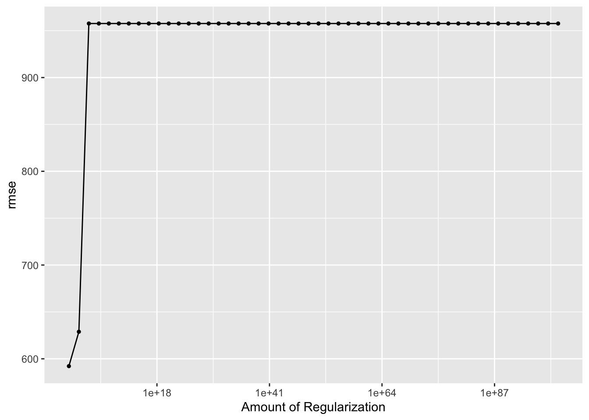

The following objects are masked from 'package:tidyr':
expand, pack, unpack
Loaded glmnet 4.1-8
library(randomForest)
randomForest 4.7-1.1
Type rfNews() to see new features/changes/bug fixes.
Attaching package: 'randomForest'
The following object is masked from 'package:ggplot2':
margin
The following object is masked from 'package:dplyr':
combine
library(parsnip)library(parameters)
Attaching package: 'parameters'
The following object is masked from 'package:tune':
parameters
The following object is masked from 'package:infer':
p_value
The following object is masked from 'package:dials':
parameters
loading data
data_location <- here::here("ml-models-exercise","data","processeddata.rds")mydata <-readRDS(data_location)# set seedset.seed(1234)
More processing
# Convert RACE to charactermydata$RACE <-as.character(mydata$RACE)# Use mutate with if_elsemydata <- mydata %>%mutate(RACE =if_else(RACE %in%c("7", "88"), "3", RACE))
Pairwise correlations
# Subset the dataset to include only the continuous variablescontinuous_vars <- mydata[, c("Y", "AGE", "HT", "WT")]# Compute the correlation matrixcorrelation_matrix <-cor(continuous_vars)# Convert the correlation matrix to a data frame for plottingcorrelation_df <-as.data.frame(as.table(correlation_matrix))colnames(correlation_df) <-c("Variable1", "Variable2", "Correlation")# Plot correlation heatmapggplot(correlation_df, aes(Variable1, Variable2, fill = Correlation)) +geom_tile(color ="white") +scale_fill_gradient2(low ="blue", mid ="white", high ="red",midpoint =0, limits =c(-1, 1),name ="Correlation") +theme_minimal() +theme(axis.text.x =element_text(angle =45, hjust =1)) +labs(title ="Correlation Plot of Continuous Variables")
Model building
First model: a linear model with all predictors
# fit linear model with all predictorslm_all <-lm(Y ~ ., data = mydata)#summary the modelsummary(lm_all)
Call:
lm(formula = Y ~ ., data = mydata)
Residuals:
Min 1Q Median 3Q Max
-1476.79 -376.44 -68.99 271.11 2425.55
Coefficients:
Estimate Std. Error t value Pr(>|t|)
(Intercept) 3525.654 1820.156 1.937 0.055263 .
DOSE 59.833 4.867 12.293 < 2e-16 ***
AGE 2.078 7.653 0.271 0.786507
SEX2 -372.675 215.374 -1.730 0.086320 .
RACE2 150.692 128.181 1.176 0.242241
RACE3 -131.856 216.875 -0.608 0.544430
WT -23.169 6.378 -3.633 0.000425 ***
HT -797.047 1099.256 -0.725 0.469916
---
Signif. codes: 0 '***' 0.001 '**' 0.01 '*' 0.05 '.' 0.1 ' ' 1
Residual standard error: 612.9 on 112 degrees of freedom
Multiple R-squared: 0.6176, Adjusted R-squared: 0.5937
F-statistic: 25.85 on 7 and 112 DF, p-value: < 2.2e-16
Second model: LASSO regression
# Prepare dataoutcome <- mydata$Ypredictors <- mydata[, c("AGE", "SEX", "DOSE", "HT", "WT", "RACE")]# Fit LASSO regression modellasso_model <-glmnet(x =as.matrix(predictors), y = outcome, alpha =1, lambda =0)# Summary of the modelsummary(lasso_model)
# Define predictors and outcome variablepredictors <-c("AGE", "SEX", "DOSE", "HT", "WT", "RACE")outcome <-"Y"# Fit the Random Forest modelrf_model <-randomForest(Y ~ ., data = mydata[, c(predictors, outcome)])# Summary of the modelprint(rf_model)
Call:
randomForest(formula = Y ~ ., data = mydata[, c(predictors, outcome)])
Type of random forest: regression
Number of trees: 500
No. of variables tried at each split: 2
Mean of squared residuals: 488418.2
% Var explained: 46.74
First fit
# set a seedrngseed =1234set.seed(rngseed)# Define predictors and outcome variablepredictors <-setdiff(names(mydata), "Y")outcome <-"Y"# Define recipedata_recipe <-recipe(formula = Y ~ ., data = mydata) %>%step_dummy(all_nominal(), -all_outcomes()) # Convert categorical predictors to dummy variables# linear modellm_mod <-linear_reg() %>%set_engine("lm")lm_wf <-workflow() %>%add_model(lm_mod) %>%add_recipe(data_recipe)lm_fit <- lm_wf %>%fit(data = mydata)lm_fit
══ Workflow [trained] ══════════════════════════════════════════════════════════
Preprocessor: Recipe
Model: rand_forest()
── Preprocessor ────────────────────────────────────────────────────────────────
1 Recipe Step
• step_dummy()
── Model ───────────────────────────────────────────────────────────────────────
Ranger result
Call:
ranger::ranger(x = maybe_data_frame(x), y = y, seed = ~rngseed, num.threads = 1, verbose = FALSE)
Type: Regression
Number of trees: 500
Sample size: 120
Number of independent variables: 7
Mtry: 2
Target node size: 5
Variable importance mode: none
Splitrule: variance
OOB prediction error (MSE): 495814.4
R squared (OOB): 0.4638349
# Make predictions for linear modellm_pred <-predict(lm_fit, new_data = mydata) %>%bind_cols(observed = mydata$Y)# Calculate RMSE for linear modellm_rmse <-rmse(lm_pred, truth = observed, estimate = .pred)# Create observed versus predicted plot for linear modellm_plot <-ggplot(lm_pred, aes(x = observed, y = .pred)) +geom_point() +geom_abline(slope =1, intercept =0, color ="red") +# Add a 45-degree line for comparisonlabs(x ="Observed", y ="Predicted", title ="Linear Model")# Make predictions for LASSO modellasso_pred <-predict(lasso_fit, new_data = mydata) %>%bind_cols(observed = mydata$Y)# Calculate RMSE for LASSO modellasso_rmse <-rmse(lasso_pred, truth = observed, estimate = .pred)# Create observed versus predicted plot for LASSO modellasso_plot <-ggplot(lasso_pred, aes(x = observed, y = .pred)) +geom_point() +geom_abline(slope =1, intercept =0, color ="red") +# Add a 45-degree line for comparisonlabs(x ="Observed", y ="Predicted", title ="LASSO Model")# Make predictions for random forest modelrf_pred <-predict(rf_fit, new_data = mydata) %>%bind_cols(observed = mydata$Y)# Calculate RMSE for random forest modelrf_rmse <-rmse(rf_pred, truth = observed, estimate = .pred)# Create observed versus predicted plot for random forest modelrf_plot <-ggplot(rf_pred, aes(x = observed, y = .pred)) +geom_point() +geom_abline(slope =1, intercept =0, color ="red") +# Add a 45-degree line for comparisonlabs(x ="Observed", y ="Predicted", title ="Random Forest Model")# Print RMSE for each modelprint(lm_rmse)
# A tibble: 1 × 3
.metric .estimator .estimate
<chr> <chr> <dbl>
1 rmse standard 592.
print(lasso_rmse)
# A tibble: 1 × 3
.metric .estimator .estimate
<chr> <chr> <dbl>
1 rmse standard 592.
print(rf_rmse)
# A tibble: 1 × 3
.metric .estimator .estimate
<chr> <chr> <dbl>
1 rmse standard 414.
# Plot observed versus predicted for each modelprint(lm_plot)
print(lasso_plot)
print(rf_plot)
I think it is because linear model and lasso model share the similar underlying principles. Both of them assume a linear relationship between the predictors and the outcome variable. And there is no penalty set for lasso model.
Tuning the models
# Define the parameter gridparam_grid_lasso <-grid_regular(penalty(range =c(1e-5, 1e2)), levels =50)# Create a workflow with the LASSO modellasso_mod_tune <-linear_reg(penalty =tune()) %>%set_engine("glmnet")lasso_wf_tune <-workflow() %>%add_recipe(data_recipe) %>%add_model(lasso_mod_tune)# Tune the modellasso_tune <-tune_grid( lasso_wf_tune,resamples =apparent(mydata),grid = param_grid_lasso,metrics =metric_set(rmse) # Adjust metrics as needed)# View the tuning resultslasso_tune %>%autoplot()

When the penalty parameter is low, LASSO behaves similarly to ordinary linear regression because the penalty for larger coefficients is small. So the RMSE is similar to linear model and even lower. However, as the penalty parameter increases, LASSO becomes more constrained, and the coefficients are increasingly forced towards zero. This can lead to underfitting, where the model is too simple to capture the complexity of the data, resulting in higher RMSE. In the end, the penalty parameter is so large that make coefficient decrease to 0, thus RMSE will not change anymore.
# Define the random forest model with fixed parametersrf_mod_tune <-rand_forest( mtry =tune(), min_n =tune(), trees =300) %>%set_engine("ranger", seed = rngseed) %>% parsnip::set_mode("regression")# Create a workflow with the random forest modelrf_wf_tune <-workflow() %>%add_model(rf_mod_tune) %>%add_recipe(data_recipe)# Define the tuning grid with 7x7 combinationsmtry_values <-seq(from =1, to =7, length.out =7)min_n_values <-seq(from =1, to =21, length.out =7)param_grid_rf <-expand.grid(mtry = mtry_values,min_n = min_n_values)# Tune the modelrf_tune <-tune_grid( rf_wf_tune,resamples =apparent(data = mydata),grid = param_grid_rf,metrics =metric_set(rmse) # Adjust metrics as needed)# View the tuning resultsrf_tune %>%autoplot()
Tuning with CV
# Set the random number seedset.seed(rngseed)# Create 5-fold cross-validation resamples, repeated 5 timesresamples <-vfold_cv(data = mydata, v =5, repeats =5)# Tune LASSO model again with resampleslasso_tune_CV <-tune_grid( lasso_wf_tune,resamples = resamples,grid = param_grid_lasso,metrics =metric_set(rmse) # Adjust metrics as needed)# View the tuning results againlasso_tune_CV %>%autoplot()
# Tune RF model again with resamplesrf_tune_CV <-tune_grid( rf_wf_tune,resamples = resamples,grid = param_grid_rf,metrics =metric_set(rmse) # Adjust metrics as needed)# View the tuning resultsrf_tune_CV %>%autoplot()
After CV is applied, there is not much change on LASSO model, while the pattern of RF model changes. When min_n is higher and mtry is at the middle value between 1 and 7, the RMSE has the lowest value. Because CV is applied, which can provide a more realistic estimate of model performance compared to use simplly the whole dataset. I think LASSO performs better based on RMSE value. And the reason might because LASSO has penalty to reduce overfit compared to RF.